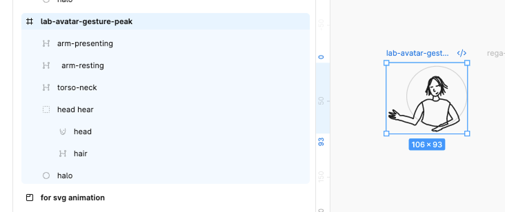
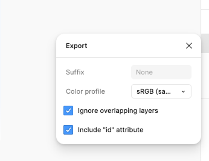

Bringing two of the wayfinding avatars to life: an idle gesture for the Lab guide, and a wind reaction for the Harbour one. Mostly a story about the gap between the units a designer specifies in and the units a viewer actually perceives.
First real test of animating the illustrated avatars. Two briefs, written tightly and in design terms — "approximately 1–2 degrees", "restrained", "extremely subtle". Both were implemented exactly as specified, and the first one was invisible.
Lab
The spec'd 1.8° was correct and completely invisible — the arm tip moved 2.12px
Degrees aren't what a viewer perceives; pixels of travel are, and that depends on how far the moving part sits from its pivot. At 96px wide the presenting arm is only ~48px long. The brief's restraint was right in intent and unachievable in that unit. Raised to 6°, then 9° (~7.4px). The head needed nearly double the arm's degrees to read as equally alive, because a head is short and an arm is long.
Lab
Slowness read as "nothing is happening" more than smallness did
A movement spread over ~3 seconds reads as drift, and the eye discards drift. Compressing the same gesture to ~1.3s made the same rotation far more visible. Two separate knobs that are easy to conflate: narrow the keyframe windows to make the gesture quicker; lower the duration to make it happen more often. Conflating them turns a restrained idle into a fidget.
Lab
Hair had to be nested inside the head, not animated beside it
As flat siblings they rotate independently — head about the neck, hair about the crown — which slid the hair ~1.3 units against a 4-unit stroke and visibly detached it from the skull. Nested, the group carries the tilt and the hair adds a small rotation on top. That is what secondary motion means: follow-through relative to the thing it's attached to, not motion of its own.
Lab
Transform origins do not survive a re-export
The second export changed the artboard from 275×218 to 107×93 and changed its aspect ratio, because the halo expanded the bounds. Origins are anatomical points in viewBox units — neck, crown, shoulders — so carrying the old numbers over would have put every pivot somewhere off the body, with no error to notice. They must be re-derived, never rescaled. Now written into the CSS as a warning.
Rega
Made the resting state the CSS default rather than an animation
Neutral hair and resting scarf visible, wind versions at zero opacity, with no JS involved. So with scripts disabled, reduced motion on, or the reaction simply never firing, the avatar is already correct. Nothing has to run for it to look right — the animation is purely additive.
Rega
Crossfaded the neutral/wind swap instead of hard-cutting
~130ms overlap. A gap would be worse than an overlap: the hair would vanish for a frame, which reads as a glitch. 130ms is too brief for the double image to register.
Rega
Staggered the secondary motion deliberately
Hair starts drifting after the head has already dipped; the scarf keeps oscillating after the hair settles. Everything moving at once reads as three objects animating. Offset, it reads as one event with consequences.
| Part | 1° buys | Final value | Actual travel |
|---|
| head | 0.45px | 9° | 4.0px |
| hair | 0.36px | 4° | 1.4px |
| presenting arm | 0.82px | 9° | 7.4px |
| resting arm | 0.69px | 3° | 2.1px |
Rules of thumb that fell out of measuring: under ~1.5px of travel is invisible at this size; 3–5px reads as a subtle idle; above ~10px starts looking like a wave rather than an idle.
Meta-learning about structuring the Figma file — and a correction worth keeping. The first assumption here was wrong: the Lab avatar's paths arrived with no ids, and that was read as "the layers aren't named." They were named, all of them, and correctly. The cause was an export setting — Include "id" attribute, off by default in Figma's SVG export. So the fix isn't a naming discipline, it's one checkbox. That's a much better outcome, because naming discipline has to be re-earned on every file and a checkbox doesn't. Worth noting how invisible the failure is: the export succeeds, the drawing is perfect, and only the machine-readable structure is silently missing. Including the halo in the asset removed a second class of guesswork — I'd hand-placed that circle by reading path coordinates, and it was visibly wrong.
the layers were fine

Named all along — arm-presenting, arm-resting, torso-neck, and a group holding head + hair. Note that grouping: it independently matches the nesting the animation turned out to need, so the hair inherits the head's tilt instead of sliding off the skull.
the actual cause

One checkbox — Include "id" attribute in the SVG export options. Off by default. With it on, layer names come through as real ids and the code can address #arm-presenting by name; without it, paths can only be identified by document order, which silently reassigns if anything is ever reordered.
held at peak
Lab avatar, gesture held — the full extent of the idle: head 9°, presenting arm 9°, about 4px and 7.4px of travel respectively. Captured by pausing the animation mid-hold, because the movement is too brief and too small to catch by hand.
wind, frame 1
Rega, wind reaction — neutral hair and resting scarf swapped for their windblown versions, head dipped 2.5° away from the gust.
wind, frame 2
Rega, later in the flutter — the scarf oscillates after the hair has settled. Two frames rather than one because the difference between them is the whole point: fabric keeps moving once hair has stopped.
What I'd do differently next time: turn on Include "id" attribute as a default habit for anything destined to be animated — it costs nothing and it's invisible when missing. And specify motion in pixels of travel, not degrees — or at minimum state the intended render size alongside the degrees, since the two are meaningless apart. "The arm tip should move about 5px" survives a change of artboard, avatar size, or breakpoint. "1–2 degrees" doesn't.
Shareable hook
I briefed an animation at "1–2 degrees, restrained." It was built exactly to spec and I couldn't see it at all. The problem was the unit: at the size that avatar renders, 1.8° moves the hand about two pixels, over three seconds. Degrees are what you specify; pixels of travel are what someone actually perceives — and the conversion depends entirely on how long the limb is. A head needs nearly twice the degrees of an arm to look equally alive.